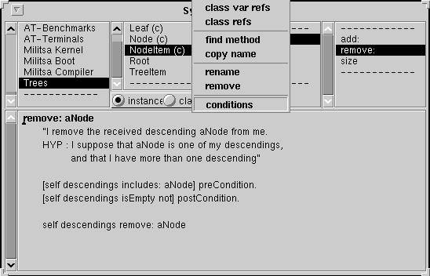

Smalltalk: a Reflective Language
Fred Rivard
Object Technology International Inc.
Ottawa - Ontario
fred_rivard@oti.com
Reflection'96 - San Franscico - CA
Edited by Gregor Kiczales
postcript version (152190 octets) here
Abstract:
As in the LISP tradition, SMALLTALK
is almost entirely written in
itself. It offers important advantages such as large
portability, dynamicity, a
fully unified world, graphical user interface builders,
connection to databases, powerful development
tools, etc. In this paper we discuss the trait that
underlies all these features: REFLECTION. We quote one of its
definitions and in the first part of this paper go
through the different reflective aspects of SMALLTALK. We expand five
major aspects in detail: meta-operations, the classes/metaclasses model,
the reified compiler, message sending
and the behavioral representation through the reification of the executive
stack frame of each process. We illustrate their use with significant
applications, based both on
our industrial and research experiences.
In the second part of the paper, we introduce and fully develop
pre/post conditions in SMALLTALK, dealing with extensions of
the model, the compiler, and the development environment.
Most of smalltalk reflective aspects are used to implement NeoClasstalk
(NeoClasstalk web page).
 1 Introduction
1 Introduction
2 Reflective aspects survey
 2.1 Meta-Operations
2.1 Meta-Operations
2.2 Structure
2.3 Semantics
2.4 Message Sending
2.5 Control State
3 Reflective Extension: Addition of Pre/Post Conditions
3.1 Model Extension
3.2 Environment Extension
3.3 Compiler Extension
3.4 Benchmarks
4 Conclusion
References
A.1 Code
SMALLTALK derives its success largely
from being not only a language but also an operating
system and a development environment as well as producing applications which
are extremely portable on multiple
platforms.
The most important
aspect about the language is that, in the LISP tradition, it
is almost entirely written in
itself. This property makes it an open system that is easily
extendable. The implementation of SMALLTALK [Par94b] itself is structured as
an object-oriented program, expressed in
SMALLTALK and organized around meta-level objects representing the
classes, methods, lexical closures, processes, compilers, and even the
stack frames.
SMALLTALK belongs to the field
of languages that deals with reflection.
itself is structured as
an object-oriented program, expressed in
SMALLTALK and organized around meta-level objects representing the
classes, methods, lexical closures, processes, compilers, and even the
stack frames.
SMALLTALK belongs to the field
of languages that deals with reflection.
`` Reflection is the ability of a program to manipulate as data
something representing the state of the program during its own execution.
There are two aspects of such manipulation : introspection and
intercession. Introspection is the ability of a program to observe and therefore
reason about its own state. Intercession is the ability of a program to
modify its own execution state or alter its own interpretation or meaning.
Both aspects require a mechanism for encoding execution state as data; providing
such an encoding is called reification'' [DBW93].
Even if the precise point at which a language with
reflective facilities becomes a reflective language is not well defined
(and is an interesting issue that merits examination by the reflective
community as a whole), SMALLTALK has one of the most complete sets of reflective
facilities of any language in widespread use. Although SMALLTALK is not fully
reflective due to the pragmatic reason of
efficiency [GR83], its reflective
facilities can provide much of the power of full
reflection [FJ89].
This characteristic is
responsible for most of its advantages over
other industrial object-oriented languages, such as C++ and ADA95.
What probably accounts for a large part of the success of the
early LISP interpreters and their
different derived dialects, is the great ease with which one can describe and build
programs in terms of simple objects such as lists. Taking the trivial example
of the addition of two numbers, the program can be described as
(cons '+ '(1 2))
Thus, one can consider programs as regular data and may
use them as such. Futhermore, the program can reason
about itself. The idea follows that a program could see
itself as data, and thus modify itself.
Although SMALLTALK seems to be a little bit more complicated than LISP at first glance, it has kept LISP's approach
towards code, regarding and manipulating it as regular data. Taking the creation of simple
objects such as points as an illustration, the external representation of a
point matches
exactly the program that creates it.
1@2
represents a point where the x value is 1 and the y value is
2. Moreover, the
execution of this representation, viewed as an expression,
returns exactly the point object 1@2.
The internal representation can also be accessed. An object may have a
textual representation of its internal state using the message
storeString, which returns
a sequence of characters that is an expression
whose evaluation creates an object similar to itself.
Thus (1@2) storeString returns the string
'Point x: 1 y: 2'.
Explicitly calling the regular evaluator using
Compiler evaluate: '...aString...', the evaluation of
this next string returns true:
(1@2) = (Compiler evaluate: ((1@2) storeString ))  true
true
Classes, which are complex objects, also have a textual
representation.
ArithmeticValue subclass: #Point
instanceVariableNames: 'x y '
classVariableNames: ''
poolDictionaries: ''
category: 'Graphics-Geometry'
The above text matches the definition of the Point class, which
can be obtained by sending the definition method to the reified
object that represents the Point class.
Thus the evaluation of a class definition returns an object (a class) that
returns exactly the same string when asked for its definition.
The SMALLTALK code is stored in what is called a method, which
corresponds (approximately) to a named LISP lambda-expression.
As for classes, a textual representation may be obtained just by sending
introspective messages.
[:x | x+1] is equivalent to the
(lambda (x) (+ x 1)) LISP expression. It is represented by an object
from which one can ask for
its external textual representation. In order to get their
external textual representation, methods and lexical
closures, denoted under the vocable block, use their internal
representation, which mainly comprises bytecodes, as well as a
decompiler (which is reified, too). A special tool ( CompiledCodeInspector) makes
the access to this source representation
very user friendly, using the mouse and a click on a field.
Therefore, following the LISP tradition, a SMALLTALK program may
reason about itself regarding and manipulating the different objects that represent it
(textually or internally).
``First, the basic elements of the programming language - classes,
methods and generic functions - are made accessible as objects. Because
these objects represent fragments of a program, they are given the special
name of metaobjects. Second, individual decisions about the behavior
of the language are encoded in a protocol operating on these metaobjects -
a metaobject protocol. Third, for each kind of metaobject, a default
class is created, which lays down the behavior of the default language in
the form of methods in the protocol.'' [KdRB91]
Ordinary objects are
used to
model the real world. Meta-objects describe these ordinary
objects. As a consequence, meta-objects mostly describe SMALLTALK
entities. We quote non-exhaustively major meta-object classes (classified by subject):
- Structure:
Behavior, ClassDescription, Class,
Metaclass, ClassBuilder
- Semantics:
Parser, Compiler,
Decompiler, ProgamNode, ProgramNodeBuilder, CodeStream
- Behavior:
CompiledMethod, CompiledBlock, Message, Signal, Exception
- Control State:
Context, BlockContext, Process, BlockClosure, ProcessorScheduler
- Resources:
ObjectMemory, MemoryPolicy, WeakArray
- Naming:
SystemDictionary, NameScope, PoolDictionary
- Libraries:
MethodDictionary, ClassOrganizer, SystemOrganizer
- Environment:
Browser, Inspector, Debugger
The methods associated with these classes formalize what can be considered as the SMALLTALK MOP.
This paper is divided in two parts: the first
part is a survey of the reflective capabilities of the language, and the
second is
an illustrative example of those capabilities.
After having presented meta-operations and their use,
we focus on the most important reflective subjects: structure,
behavior, semantic and control state. We describe the involved
meta-objects and their classes. We quote significant
applications using such objects.
As an illustration of reflective manipulations, we introduce pre/post
conditions in SMALLTALK, dealing with (small) extensions of
the model, the compiler and the development environment.
We conclude with the current propensity of SMALLTALK to include more and more
reflection in recent releases, which we consider as a sign of adaptability
to new software engineering challenges.
Rather then going through a complete enumeration of all the reflective
facilities of SMALLTALK, we concentrate on the most important
ones:
- Meta-Operation: regular objects as metaobjects,
- Structure: classes as regular objects,
- Semantics: compilers as regular objects,
- Message Sending: messages as regular objects (when
errors occur),
- Control State: processes as regular objects.
Meta-operations are operations that provide information
about an object as opposed to information directly contained by the
object. [...] They permit things to be done that are not normally
possible (page 195 of [LP90]).
Major meta-operations are defined in the root of the inheritance tree, the class
Object as methods for:
- addressing the internal object structure
- Object>>instVarAt:(put:)
reads (writes)
an instance variable using an index instead of the name of the instance
variable,
- addressing the object meta representation
- Object>>class
returns the class of the receiver,
- Object>>changeClassToThatOf:
changes the
class of an object, and thus its behavior. But a heavy restriction of this
method is
that both classes must define the same format, i.e., describe the same physical
structure for their instances,
- addressing the object identity
- Object>>#allOwners
returns an array of all objects
referencing the receiver,
- Object>>#identityHash
returns an integer
ranged in 0..16383. It is used to implement dictionary classes which provide efficient access to the
objects of a collection using keys,
- Object>>#become:
swaps references between two
objects (the receiver and the argument).
These meta operations consider an object as a
meta-object, but an object understands ordinary methods too, such as printString or
inspect. While some classes define only meta-objects ( Class,
Compiler, ...), other classes define instances that can be qualified as
meta-objects depending on the context in which they are used ( Object,
Array(cf 2.3), ... ). Therefore, stamping labels on classes
based on their
meta(or not) instances cannot always be reduced to a dichotomy of
choices.
Introspection is the essence of reflection, and so the first applications using
structural reflective facilities are tools used to introspect the SMALLTALK
system: the Inspector class and its subclasses.
An inspector enables the user to look at the structure of an object,
and to modify its instance variable values, using
Object>>#instVarAt:( put:) methods.
The inspector uses
the inspected object class ( Object>>#class) to get its instance variable names (
Behavior>>#allInstVarNames) and the index of the instance
variables.
Notice that these methods allow the programmer to break the encapsulation of
an object, and this must only be used in pertinent contexts.
(3@4) x 3
(3@4) instVarAt: 1 3
(3@4) instVarAt: 1 put: 5 5@4
(3@4) class instSize 2
(3@4) class allInstVarNames ('x' 'y')
A hierarchy of inspectors is available, allowing specialized inspection
on particular
objects, such as collections, dictionaries, etc.
Inspector
ChangeSetInspector
CompiledCodeInspector
ContextInspector
DictionaryInspector
SequenceableCollectionInspector
OrderedCollectionInspector
Structural reflection implies the ability of the language to provide a
complete reification both of the program currently being executed as well as
of its abstract data type[DM95].
SMALLTALK as a unified language only manipulates objects. Each object
is an instance of a class that describes both the behavior and the structure of its
instances. A class named Object defines the basic
behavior of every object of the system, such as accessing the class of an
object.
Classes as regular objects are described by other (regular)
classes called metaclasses. A
metaclass has a single instance (except
metaclasses involved in the kernel of SMALLTALK). It establishes a couple
class/metaclass schema. Inheritance on metaclasses follows the one
at the class level (cf Figure 1), defining the SMALLTALK
metaclass composition rule.
This schema is known as the
SMALLTALK-80 schema, and states how metaclasses are composed. It may
induce class hierarchy conflicts [Gra89], but for everyday
development, the pragmatic SMALLTALK choice suits most needs.
Metaclass display is the concatenation of the global name of its sole instance (a class),
and the class string. As an example, the metaclass of the class
Object is the Object class metaclass.
The behavior of classes and metaclasses are described by two
(meta)classes respectively named Class and Metaclass.
In order for classes to behave as classes, Object class inherits
from Class. In particular the new method, enabling object
creation, is accessible. This property is often given as the definition of
a class. All metaclasses
are instances of Metaclass, and in particular the Metaclass class is
also an instance of Metaclass, stopping de facto an
instantiation of infinite regression. Two abstract classes named Behavior and
ClassDescription regroup the common behavior between metaclasses and
classes (for example new is defined on Behavior).
Finally the class/metaclass kernel of SMALLTALK is
self-described with only five classes:
- Object
provides default behavior common to all objects,
- Behavior
defines the minimal behavior for classes,
especially their physical representation, which is known by the SMALLTALK virtual machine,
- ClassDescription
implements common behavior
for Class and Metaclass such as category organization for
methods, named instance variables, and a save ( fileOut) mechanism,
- Class
describes regular class behavior,
- Metaclass
describes regular metaclass behavior.

Figure 1: SMALLTALK class/metaclass kernel
The SMALLTALK-80 kernel has pragmatic origins,
resulting from several years of intensive development
using simpler models that chronologically were SMALLTALK-72 [KG76] and SMALLTALK-76 [Ing78]. In order to keep an ``easy to use'' model,
a tool named ClassBuilder hides the apparent complexity
of the kernel from the end-user. A class creation
(and its associated metaclass creation) is fully managed by
the tool, which is called by the class creation
protocol.
It
also automatically manages class redefinition, guaranteeing system
consistency in terms of object structures and preventing name
conflicts, especially instance variable name conflicts.
When a class
definition changes, existing instances must be structurally modified
in order to match the definition of their new class. Instead of modifying
an existing object, the ClassBuilder creates a new one with the
correct structure (i.e., from the new class that replaces the old one). It then fills this new object
with the values of the old one. The
ClassBuilder uses the become: primitive (cf 2.1.1) to
proceed with the strutural modifications, by replacing the old objects
with the new ones throughout the entire system.
Methods are held by classes in an instance variable methodDict,
whose value is an instance of the
MethodDictionary class. It enables access to the SMALLTALK
code. It also allows methods to be dynamically added at runtime ( ClassDescription>>compile:classified:).
The ClassOrganizer class provides an organization of methods according
to their purpose in protocols and every class holds such an organization in
the instance variable organization. Classes themselves are grouped into categories according
to their purpose. Smalltalk organization represents the
organization of classes. It is an instance of the
SystemOrganizer class which is a subclass of the ClassOrganizer class.
An ordinary use of the self-expressed kernel is to extend it in order to match
new application domains. Our next pre/post conditions example
(cf 3) is such an extension. As another typical example,
CLASSTALK [Coi90] proposes an experimental
platform (an extension of SMALLTALK) to study explicit metaclass
programming. But even in the language, reification is of great benefit
allowing introspection using dedicated tools: Browser. It manipulates classes and metaclasses
as regular objects. Thus, it can investigate their definitions
ClassDefinition>>#definition and their inheritance links, following the
reified superclass/subclasses instance variables.
The Browser organizes the user external interface according to the
information held by the different reified organizations :
- A list pane showing the categories, using Smalltalk organization,
- A list pane showing class names,
- A list pane showing the protocols of a selected class,
- A list pane showing the selectors of a selected protocol,
- A text pane for method edition, class definition edition,
class comment, ....
The reification of classes allows the language to provide essential
efficient utilities such as implementors (look into all classes for methods matching a given name),
senders (look into all methods for the ones performing a given sending
message) and
messages (look for implementors of a message present in a given
method).
Point selectors IdentitySet( #x #y #transpose ...)
Point compiledMethodAt: #+ Point>>+
Point findSelector: #class #( Object Object>>class)
Point superclass ArithmeticValue
Point compilerClass Compiler
One of the salient features of SMALLTALK is the fully reified
compilation process.
Since any compiler implicitly gives the semantics of the language it compiles, and because
SMALLTALK has in itself, as regular objects, its own compiler, the SMALLTALK
semantics is fully controllable.
Therefore one may extend the current language semantics providing new
compile-time features by extending/modifying current compilers.
This approach must be compared to the one of compile-time
MOP [LKRR92], which breaks
the compilation process into small independent fully
redesignable pieces. SMALLTALK
compilation uses the existing SMALLTALK code for its own needs, and is
designed as a regular OO program which is causally connected to the language.
Thus, using current OO technology, one can extend the current compilation
process. Next we describe what can be considered as the first compile-time
MOP. But the heavy interaction between what is part of the
compiler and what is not sometimes makes the use of this compile-time MOP
difficult. Therefore the authors of
[HJ95] proposes a more parametrized
compiler. This big interconnection between the
compilation phase and the SMALLTALK language as a whole is demonstrated
by the next small example, which discusses the order of argument evaluation
of a message send. The compilation process uses
the regular
do: method from the SequenceableCollection class, allowing the
treatment of
each element of a collection in a left to right order. Therefore, it defines a
left to right semantics for the argument evaluation order. In that, the
SequenceableCollection class can be seen as a
part of the compilation process because it defines the
semantics of the argument evaluation order. Notice that
the array that is used to hold the arguments of a
message at compile time is therefore a meta-object(cf 1.2) but other
arrays would not necessarily be meta-objects.
The two separated parts of the compilation process, parsing and code
generation, are described by class hierarchies. We first describe them, and
then proceed with their order of execution for compiling method source.
All of these classes are part of the compilation process.
In order to introduce new semantics into SMALLTALK, one can extend these classes and the associated process that
compiles code.
We next describe what steps this compilation process follows:
- While compiling a new method on a class, the class is asked
what compiler should be used in order to perform the compilation. This is done through
the Behavior>>compilerClass method. It returns a compiler class
appropriate for the source methods of this class (the default is Compiler),
- The compiler is then asked for its default parser ( preferedParserClass) in order to
proceed with the source analysis,
- The parser scans the source-stream, picking out SMALLTALK syntactic
tokens. According to the token produced by the scanToken method, it
recursively descends into the
rules of grammar ( constant, expression,
primaryExpression, temporaries, statementsArgs:temps:,
argument, pattern, method:context:, ... methods). Each time
a syntactic element is completely defined, the builder is asked to
create it. In regular SMALLTALK, ProgramNodeBuilder
returns ProgramNode. The result of the parsing is the root node (a
MethodNode) of the tree that expresses all the syntactic entities
of the method,
- The compiler builds a codeStream, which is initialized according to
the class of the method that is being currently compiled. It builds the different
NameScopes, linking them together,
- The syntactic tree is asked for code generation. The root
methodNode receives the emitEffect: method. It recursively asks each
node of the tree to generate its respective byteCodes into the
codeStream,
- The codeStream builds a CompiledMethod, according to the
bytecodes it has buffered. If there are inner blocks ( BlockClosure) in the method, which need
this method filled in as the outer method, the codeStream
proceeds to do it.
These steps are summarized in the
translate:noPattern:ifFail:needSourceMap:handler: method:
SmalltalkCompiler>>translate:aStream noPattern:...
"<1>... parsing..."
methodNode := class parserClass new
parse: aStream
builder: Prog ramNodeBuilder new ...
"<2>... code generation..."
codeStream := self newCodeStream.
methodNode emitEffect: codeStream.
method := codeStream makeMethod: methodNode.
^method
Extending the proposed semantics by intervening in the two phases of
compilation allows new semantics to be implemented that suit the domain of the
application to be modeled as well as possible.
The open ended compiler allows
modification of itself in order to get improvements needed to face new user requirements,
such as a new breakpoint mechanism [HJ95].
The
introduction of new methods into the language
can be easily performed by subclassing MessageNode, in order to
propose new message sending semantics. The code generation of this new node will be
different, inserting its own semantics.
In our experience there are five major methods that are frequently used to
add new semantics:
(i) extension of the parser
(ii) extension of the node construction
(iii) modification of the obtained parse tree
(iv) extension of the code generation phase
(v) extension of the compilation environment
Our next pre/post conditions introduction (cf 3) uses a modification of
the parse tree (iii). As another example, we provide an
efficient implementation of asynchronous message sending for
ACTALK [Bri89] (cf 2.4.2), dealing with node construction extension (ii) [Riv95].
Within ACTALK, the user has two message send semantics at his disposal:
the regular SMALLTALK one, and an asynchronous one. An asynchronous
message send is syntactically declared
using the 'a.' prefix.
anActor a.message
The distinction between the two semantics can be made by a syntactic analysis. Thus,
the idea is to intercept the messageNode creation made by aNodeBuilder
( mewMessageReceiver:selector:arguments:).
We introduce a new class,
ActalkProgramNodeBuilder, subclassing the regular
ProgramNodeBuilder. When the new nodeBuilder creates a messageNode,
it analyzes the selector of the message. If it starts with the
'a.' prefix, then the ActalkProgramNodeBuilder returns aMessageNode of
which the selector is the one that queues (at runtime) the asynchronous message
into the received messages queue of
the actor ( addMessage:arguments:).
Thus, for the ' anActor a.message'
expression, the builder returns the next messageNode:
aMessageNode
selector : #addMessage:arguments:
receiver : anActor
arguments: #( message, #() )
Notice that this transformation can be assimilated to a macro-expansion of
all 'a.' prefixed message sends.
More generally,
used in association with the kernel extension, compilation reflection allows
one to build new languages [RC94]. It allows SMALLTALK
to execute
source code whose semantics is different from the default one. A
large industrial example is given by OBJECT5 [Sie94]
.
It is a strongly typed hybrid language based both on the
actor and class paradigms, dedicated to Programmable-Logical-Controllers.
Although it has 3
different message sending semantics (2 are asynchronous), it is entirely
executed in SMALLTALK, without an OBJECT5 interpreter being
written. This eliminates an always penalizing software stratum. Types have been
introduced extending the class/metaclass kernel ( TypedClass subclass
of Class)
in order to provide typed information (method signature, instance
variable types, ...). New syntactical nodes have been introduced, and
new compilers, too. Finally the SMALLTALK VM executes this new language
as it used to execute regular SMALLTALK. Contrary to the (latent)
reproach of the lack of efficiency of reflective systems, here
reflection brought an outstanding gain of efficiency.
The unique control structure of SMALLTALK is message sending.
It is composed of two phases:
- lookup: a search for the method to apply according to the receiver
of the message sending,
- apply: an application of the found method.
The lookup happens at execution time and uses class
information. Although it is not described in the
language for reasons of efficiency, the necessary information is accessible and
modifiable from the language. All the information lies in classes:
- the dictionary of methods ( methodDict instance variable: pair ( aSymbol, aCompiledMethod))
- the inheritance link ( superclass instance variable),
- caches, allowing optimization of the hardwired algorithm. Caches are not
reified, but can be reinitialized using primitives ( Behavior>>#flushVMMethod
-Cache).
Messages are not currently reified using instances of the Message
class except when the
lookup fails. In that last particular case, the
#doesNotUnderstand: method is sent by the VM to the original receiver
with a reified message given as the argument.
2 zork
2 doesNotUnderstand: aMessage
aMessage selector #zork
aMessage arguments #()
An explicit message send may be called using the perform:
primitive.
A lookup result is a CompiledMethod(cf 2.3.1), a regular object. The
valueWithReceiver:arguments: primitive allows the
application of aCompiledMethod with an array of arguments.
-regular message send:
5 factorial 120
-explicit message send using a symbol:
5 perform: #factorial 120
-application of a CompiledMethod:
(Integer>>#factorial) valueWithReceiver: 5
arguments: #() 120
Accesses to overwritten behavior are qualified by sending a message to
the pseudo variable super. The lookup semantics of such a message is
slightly different from the default lookup,
since it starts from the
from the superclass of the class which implements the method that executes the
super. As a matter of fact, the class from whose superclass the lookup
starts is accessible
within the compiledMethod variable part
(cf 2.3.1).
This class is pushed
into the variable part at compile
time ( CodeStream>>sendSuper:numArgs:).
To sum up lookup, SMALLTALK provides two different entry points:
- one that starts the lookup from the class of the receiver,
- one that starts the lookup from the superclass of a class
stored in the compiledMethod variable part.
Notice that as message sending is the only control structure, an extension of
the method semantics provides an extension of the message sending
semantics.
Everything is expressed in terms of sending messages.
There is no need for special keywords or special forms, as in
BASIC, ADA'95 or C++, etc.
As an example, a class declaration is made by sending the
subclass:instanceVariableNames:classVariableNames:-
poolDictionary:category:
message with correct arguments. Browsers use
this facility (cf 2.2.2).
An evaluation is expressed in terms of a default method.
Then it is mostly evaluated (using #valueWithReceiver:arguments:)
with nil as the default receiver. The result is either discarded
(doIt action), inspected through the sending of the inspect message
(inspectIt action), or pretty-printed through the sending of the message
printString (printIt action).
The management of the lookup failure allows the building of a catch-up mechanism by
specialization of the doesNotUnderstand:
method, as in the encapsulator paradigm [Pas86], and in
the implementation of asynchronous messages for ACTALK [Bri89].
In particular, #valueWithReceiver:arguments: and #perform:
methods can be used. More generally,
#valueWithReceiver:arguments: enables one to
dispense with the use of the default lookup and to implement (in cooperation with
the Compiler) new lookup
algorithms, such as multiple inheritance. This last approach is an efficient
alternative to
the use of the doesNotUnderstand:method (cf 2.3.2).
As an example of the use of the doesNotUnderstand method, we
describe the implementation of lazy evaluation in
SMALLTALK.
aLazyObject := [ ... aBlock ...] lazyValue.
A lazy object represents an execution that may not be required. It does
not start execution until at least one message has been
received. aLazyObject is used as the regular object that would have resulted
from the evaluation of the code inside the block ( [ ... aBlock
...]). Thus it receives messages, such as color if it represents a
Car.
nil subclass: #Lazy
instanceVariableNames: 'result done args '
classVariableNames: ''
poolDictionaries: ''
category: 'Kernel-Processes'
As the Lazy class is a subclass of nil, every message send causes
the invocation of the doesNotUnderstand method.
Lazy
doesNotUnderstand: aMessage
done
ifFalse:[ result:= result valueWithArguments: args.
done := true].
^result perform: aMessage selector
withArguments: aMessage arguments
When it receives its first message, the lazy object
forces the evaluation of the
block. Therefore it computes the real object, which was previously in a lazy
state (i.e., uncomputed). It is buffered for other message
sends. An explicit message send, using perform:withArguments:, allows
the regular execution scheme to continue.
A classical use of super is the
initialization of newly-created objects. When adding a subclass, both new
and inherited initializations must be carried out. Thus, the
initialize method of the subclass usually looks like:
Subclass>>initialize
super initialize.
self localInitialization
The SMALLTALK system is based on reified processes, and more
generally on the objects needed to build a multiprocess
system. Processes manage time scheduling ( timingPriority), event inputs such as
keyboard/mouse ( lowIOPriority), and regular user
evaluations ( userBackgroundPriority, userSchedulingPriority,
userInterruptPriority).
Processor, the sole instance of the ProcessorScheduler class, coordinates the use of
the physical processor by all
processes requiring service. It defines a preemptive semantics between
processes having different priorities.
Processor yield gives processes that have the same priority
of the one currently running a chance to run.
Semaphore class provides synchronized
communication between processes (using wait signal methods). Real
time scheduling is provided by the Delay class. It represents a real-time delay in the
execution of aProcess. The process that executes a delay is
suspended for an amount of (real) time represented by the resumption time of
the delay.
The BlockClosure class represents lexical closures. It freezes a piece of code
(along with its environment) so that it may be evaluated later on.
Blocks can have temporaries
and arguments. The general syntactic form is [:arg1 ...
:argN | | tmp1 ... tmpM | expr1 ...
exprP]. Block evaluation is provided by primitives named value,
value:, valueWithArguments: depending of the number of
arguments. SMALLTALK uses lots of blocks, as in the
SequenceableCollection>>do: method for example:
do: aBlock
"Evaluate aBlock with each of the receiver's
elements as the argument."
1 to: self size do:[:i | aBlock value: (self at: i)]
Process creation is based on blocks; the body of a process is the body of the
block. The BlockClosure>>fork method creates a process. As blocks may
share an environment, independent processes uses this facility to share common objects.
A process may be suspended, resumed or killed (using respectively
suspend, resume or terminate methods). The interruptWith: method forces the process that
receives it to interrupt whatever it is doing and to evaluate the received
block, passed as the argument.
The ProcessorScheduler>>yield method is a tiny but good illustrative
example:
yield
``Give other Processes at the current priority a chance to run.''
| semaphore |
semaphore := Semaphore new.
[semaphore signal] fork.
semaphore wait
The currently running process (the one that executes this code) creates a new
semaphore. It proceeds to the creation of a new process ( [...] fork) that is
pushed into the list of the processes that may run (at the same priority).
The current running process then suspends itself while it executes the
wait primitive. The VM then takes the next available process and makes it
run. The small created process, which shares the semaphore with the previously
running process, will run in its turn. Its only action before
dying is to unblock the previously running process using the signal
primitive on the common semaphore.
The most remarkable reflective facility of SMALLTALK is the reification
of any process runtime stack, through a chain of linked stack frames, called
contexts [Par94a]. The
pseudo-variable thisContext returns the present context of the
currently running process. It is an instance of the MethodContext class,
or the BlockContext class.
A context mainly knows (Figure 3):
- the context ( sender) which has
``created'' it via the application of a method (cf
valueWithReceiver:
arguments:), or the evaluation of a BlockClosure
using #valueWithArguments: (or #value
#value: ...),
- the method ( aCompiledMethod held by a class) currently being
executed,
- an instruction pointer, remembering
the operand that is actually being executed in the method,
- the receiver of the message, and the arguments. Note
that the receiver is an instance of the BlockClosure class for
BlockContext.
Figure 3: Two elements of the executive stack. The top-most
MethodContext represents thisContext.
SMALLTALK's extreme power of expression allows programs to fully control
its own execution, using regular objects such as Context: this is
intercession.
Therefore, a
first application of this execution control
is the implementation of the exception handler
mechanism into SMALLTALK, which modifies the ``regular'' execution scheme. The
Exception class reifies objects which manipulate the executive stack in
order to handle errors ( return, reject, restart).
Exceptions are raised through the stack, and are caught by handlers defined
by the handle:do: message, in order to take appropriate actions
on errors. This implementation may itself be extended or replaced
in order to propose an alternative to
the error handling system of SMALLTALK [Don90].
A second
very important application of the reification of the runtime
stack is the Debugger tool (see Figure 3), which can:
- consult any context of the entire executive stack,
- look at what part of the selected context is being
executed,
- inspect the receiver of the message of the selected context,
- inspect arguments and temporaries of the selected context,
- proceed to a ``step by step'' execution ( send,
step),
- modify any context by recompilation of its method, and
continue the execution with this new code.
Having described the most important reflective facilities, we
illustrate their use with a small but complete realization. Dealing with extensions of
the model, the compiler,
and the development environment, we introduce pre/post conditions
on regular SMALLTALK methods.
This is a typical way
of using the general reflection of the language: add new constructions and
extend current facilities in order to provide a language that suits the actual
application domain as
well as possible. Pre/post conditions fall under the category of
software engineering tools.
Applications are not stable during both development and coding phases. Therefore it
is essential to provide mechanisms in order to check both the properties of and the
assumptions made on methods. Pre/post conditions are devoted to this role.
A number of languages, following Flavors [Moo86], implement
before/after methods (SOM [DFM94], CLOS,... ).
One of their uses can be the implementation of pre/post conditions on methods.
But because before/after methods rely on a complex composition mechanism
and because they are assigned
to a selector (name of methods) instead of the methods themselves (regular
objects in SMALLTALK (cf 2.3.1)), we use another
implementation. It better suits their roles as described by:
``The pre-condition expresses the properties
that must be checked when the method is called. The post-condition
certifies those properties that the method guarantees when it returns.''
[Mey90]. When the development is over and the
software is about to be released, correct method use makes
pre/post conditions no longer useful. They should be removed in
order to provide software clean from any development topics. This is how we
use pre/post conditions. Our goal is to provide pre/post conditions in SMALLTALK that respect
the dynamic and convivial tradition of the language.
Specifications are summarized as follows:
- dynamic behavior : SMALLTALK users are
used to dealing with dynamicity, like adding an instance variable anywhere
in a hierarchy of classes. Dynamicity for pre/post conditions means being
able to swap from a state
where they are active to another one where they do not
interfere at all with the code,
- hierarchy independence: the SMALLTALK model deeply connects a class to its
metaclass (cf 2.2.1), of which it is the sole instance. In respect to this model
we propose the activation (or deactivation) of pre/post conditions on the
class/metaclass couple, but only locally.
The activity of conditions on an A class does not propagate
to A's subclasses,
- syntactic convention: instead of extending
the syntax with a new special character such as the temporaries
delimiter "|", we use a convention. It is an often-used scheme in
SMALLTALK, as for example with the private protocol, which
states that methods from this protocol are supposed to be for
private purposes [GR83]. Notice that an extension of
the method semantics (using the reified compiler chain (cf 2.3.1))
can provide such privacy,
- return semantics compatibility:
the return semantics ( the ^ symbol) may require the popping of many contexts. We assume
that an active post-condition will be evaluated even when returns occur in
the body of methods (or in a block evaluation which closes a return),
- flexibility: the code of both pre- and post-conditions may access
the method context, especially parameters and temporaries,
- convivial interface (cf Figure 4):
The interface modifications must be as small as possible. The user can:
-
look at the source of the pre/post
conditions associated with a method
while browsing the method source (without other manipulations),
-
know through his favorite development tool ( browser), whether or not
conditions are active just by looking at the class name display (class
pane of the browser),
-
change the activity of the conditions of a class using a popup menu,
as in SMALLTALK's usage.

Figure 4: The currently selected class (NodeItem) has its
conditions activeness set (cf "(c)"). The associated conditions
codes is executed at runtime. The figure also shows the menu (conditions)
that permits the change from active to non-active conditions (and vice versa)
Next we present the convention used to write conditions (one or both
conditions may be omitted):
selector
" comment"
| temporaries |
[..blockPreCondition..] preCondition.
[..blockPostCondition..] postCondition.
expr1 .... exprN
This syntactic representation offers several advantages:
- no ``parasitic'' methods are introduced,
whose semantics would have been derived from their selectors, such as the creation of
qualified methods as it is done with method combinations described in
[Coi90]. As a matter of fact, this last solution suffers
major drawbacks: these qualified methods pollute the interface of the class,
and there is no way to prohibit their use as regular methods in another context,
- Using a block to represent a condition allows
full access to the method context. It would have been quite difficult to
manipulate such a method context with conditions outside the method
itself (both temporaries and arguments access would have been
hard to realize, for example).
When not active, pre/post conditions should absolutely not
interfere at execution time. This is the most important specification of
our method pre/post conditions. This point is
crucial. It means that at execution time, we do not allow ourselves to test to see if
the conditions are active. Therefore, the test must be done
at compile time:
- if conditions are active, then the code needed for their
execution is generated at compile time,
- if conditions are not active, then the conditions are
ignored and only the regular method body is generated.
Thus, we need two different compilation phases.
Changing from active to non-active conditions (and vice versa) is expressed
in terms of having a quick recompilation of the class interface.
We next describe our solution based on the introduction of a subclass of
Metaclass.
Considering that the behavior related to conditions activity is both on the class and its
metaclass, and that it should not interfere with the inheritance,
we put the activity notion on Metaclass, and on a newly created subclass named
MetaclassWithControl. This new metaclass manages behavior according to
development topics such as pre/post conditions. The compilerClass method (cf
2.3.1) returns the
class whose instances (a compiler) are used to compile the methods of a given
class. Thus the default compilerClass method is
conceptually raised one meta level from that of Behavior to that of Metaclass and
MetaclassWithControl (cf SMALLTALK kernel 2.2.1).
- Behavior>>compilerClass returns the compilerClass of the
metaclass (i.e., calls one of the next two compilerClass methods)
(cf A.1),
- Metaclass>>compilerClass returns the default
compiler that does not take conditions into account (and just forgets their
associated codes),
- MetaclassWithControl>>compilerClass returns the compiler that
deals with conditions codes.
Thus (cf Figure 5),
- the metaclass of a class whose conditions are active
is an instance of MetaclassWithControl,
- the metaclass of a class whose conditions are not active
is an instance of Metaclass.
Changing from active conditions to non-active ones is done by dynamically
changing the class [Riv96] of the metaclass from MetaclassWithControl to
Metaclass (and vice versa) using the changeClassToThatOf: method (cf 1.2).
Figure 5: The metaclass class changes its class dynamically.
This solution has many advantages:
- as expected, it allows a class to behave in a certain way, without
interfering with inheritance. Indeed, a dynamically added
compilerClass method (cf 2.3.1) on an A class metaclass would have been
inherited by all A class subclasses. Thus A and all its
subclasses would have a connected behavior, which is not within our
specification. This is due to the parallel inheritance trees provided
by both the class and
metaclass levels (cf 2.2.1: SMALLTALK model).
- no development topics lie hidden in classes (
neither in their definition nor in their interface).
This must be contrasted with a solution that would have added an instance variable
to the Class class definition, in order to remember the
activity at runtime. The default compilerClass would have to test this instance variable
in order to answer the correct compiler. Compared to ours, this last solution
is very expensive both
in terms of class definition impact and space.
Moreover it implies another problem: when an application is
released, all its classes have a ``development'' instance variable always
positioned to the same boolean value. It is not reasonable to produce such a
class structure. A recompilation of the Class class before release is not
possible either, because it would no longer be possible to have both released
applications and applications in the development stage. In any case, it does not agree with
the specification that when not active, conditions should not
interfere in any way with regular SMALLTALK.
Finally, notice that this model extension illustrates the great extensiveness
of the SMALLTALK kernel. Indeed, if active conditions are put on
Metaclass, its class ( Metaclass class (cf 2.2.1)) is an instance
of MetaclassWithControl, instead of Metaclass, which was the kernel
``trick'' to stop the infinite instantiation regression. Moreover a new loop in
the instantiation link appears when MetaclassWithControl
has its conditions activity set to true. This demonstrates that even the very
deepest part of the SMALLTALK kernel (cf 2.2.1) can easily be extended, without causing the
whole system to fail.
Our choice of syntactic convention allows the method context to be accessible
from condition codes. From an interface point of view, the user looks at its
method and associated condition sources at the same time. Practical
experience shows the advantage of this convivial representation. It is
combined with an immediate view of the activity of the class conditions: when
a class has active conditions, the name of the class is suffixed by the
(c) string (cf Figure 4).
As we have extended the model in order to add a new metaclass description to
deal with development topics, browsers should also take into account
this new description. Standard SMALLTALK browsers, as global
introspection class tools, assume that class semantics are fixed. Thus, in
order to take new class semantics into account, we modifiy the class interface by
adding a cooperation between classes and browsers [RM93]: a browser
does not simply
ask for the name of the class, but for its browsingName. With this
message, a class fully controls what a browser shows.
MetaclassWithControl>>browsingName adds the ' (c)' string suffix
to the name
( classOnControlString method).
Having designed the structural part of the model and shown its implication in terms of
interface extension, we now need to extend the compilation in order to manage
the needed codes for active pre/post conditions.
Our solution is based on manipulation of the parse tree, which is generated
by the SMALLTALK parser. We need:
- to position the pre-condition (if one exists) as the first
statement of the method. We also add the test that raises an exception if
the pre-condition evaluation does not return true at execution time,
- to position the post-condition (if one exists) as the last statement of
the method. As with the pre-condition, we add the test that raises an
exception if the post-condition evaluation does not return
true. As returns may occur (in the method itself or wrap within a
blockClosure received as an argument), it could cause the post-condition to not be
evaluated. We wrap the entire method using valueNowOrOnUnwindDo: which
allows execution of the post-condition regardless of what happens.
Next we give an equivalent syntactic form of what could be the code if we
were to decompile the parse tree after its reshaping:
selector
`` comment''
| temporaries |
[[..blockPreCondition..] value ifFalse:[ParserWithControl preConditionSignal raiseRequest].
expr1 .... exprN ] valueNowOrOnUnwindDo:[
[..blockPostCondition..] value ifTrue:[ParserWithControl postConditionSignal raiseRequest]]
As we need a new compiler when pre/post conditions are active,
the CompilerWithControl class is introduced
as a
subclass of the standard Compiler class. We subclass the Parser class with
ParserWithControl class, which is associated with the new
CompilerWithControl class through a redefinition of its preferredParserClass
method (cf
2.3.1). We next describe the steps that produce a method and
its conditions:
- the method is parsed as a regular SMALLTALK method. A parse tree
is obtained as a result (cf 2.3.1) of the first step of the compilation process,
- the parser, aParserWithControl, reshapes the resultant parse tree to get the previously
described transformation. During the transformation, new
ProgramNodes are created, using the parser builder,
aProgramNodeBuilder (cf code A.1
ParserWithControl>>compilePreCondition).
- the parse tree generates regular SMALLTALK code.
The regular parser (an instance of the Parser class) removes
pre/post condition codes, if any.
The major goal of this extension is to provide code free from any tests when
pre/post conditions are not active. Thus, if not active, conditions do not
affect the runtime performance at all. When active their code is executed
according to the code wrapped around the conditions, which
of course takes time.
We make two significant benchmarks on the compilation process:
- we
compare the time taken to compile a method which is free from any conditions
both (i) without our extension, and (ii) using our extension with conditions activity
set to true. The
compilation time increases on average by less than 2% from (i) to (ii), which allows a
comfortable use of the extension,
- we compare the
compilation time of (i) a method that has active conditions using our extension and
(ii) the equivalent code hand written by the user.
(i) is on average 9% quicker than (ii). This results mainly from the fact that the
source to parse is smaller when writing conditions using our
conditions extension.
We have described the current reflective
facilities of SMALLTALK. We have presented the most important current
aspects: meta-operations, the class/metaclass model,
semantics control through the reified compiler, message sending
and behavioral representation through the reification of the runtime stack
processes. We have fully described an example of reflective use with the
introduction of pre/post conditions into SMALLTALK.
As it evolves, SMALLTALK tends to become more and
more reflective. In particular we can quote the reification of the dependent
link ( DependencyTransformer class), and the definition of a parser
generator ( ParserCompiler class), written in itself. REFLECTION is
the heart of SMALLTALK.
It gives the language its
great expressive power. Because the language
possesses the ability to naturally adapt itself to new application domains,
it may be considered as a truly perennial language.
I wish to thank all the reviewers for their comments.
Thanks to Pierre Cointe who helped me in the organization of the paper.
Special thanks to Jacques Malenfant who spent time on the elaboration
of the final version of the paper.
References
- Bri89
-
Jean Pierre Briot.
Actalk : A testbed for Classifying and Designing Actor Languages in
Smalltalk-80.
In Proceedings of ECOOP'89, Nottingham, July 1989.
- Coi87
-
Pierre Cointe.
Meta-classes are First Class: the ObjVlisp Model.
In Proceedings of OOPSLA'87, pages 156--167, Orlando, Florida,
December 1987. ACM Sigplan Notices.
- Coi90
-
Pierre Cointe.
The ClassTalk System: a Laboratory to Study Reflection in
Smalltalk.
In Informal Proceedings of the First Workshop on Reflection and
Meta-Level Architectures in Object-Oriented Programming, OOPSLA/ECOOP'90,
October 1990.
- DBW93
-
R.G. Gabriel and D.G. Bobrow and J.L. White.
CLOS in Context - The Shape of the Design Space. In Object
Oriented Programming - The CLOS perspective.
MIT Press, 1993.
- DFM94
-
Scott Danforth, Ira R. Forman, and Hari Madduri.
Composition of Before/After Metaclasses in SOM.
In Proceedings of OOPSLA'94, Portland, Oregon, October 1994.
- DM95
-
Francois-Nicola Demers and Jacques Malenfant.
Reflection in logic, functional and object-oriented programming : a
Short Comparative Study.
In Workshop of IJCAI'95 : On Reflection and Meta-Level
Architecture and their Application in AI, pages 29--38, August 1995.
- Don90
-
Christophe Dony.
Exception Handling and Object-Oriented Programming: towards a
synthesis.
In Proceedings of OOPSLA/ECOOP'90, pages 322--330, 1990.
- FJ89
-
Brian Foote and Ralph E. Johnson.
Reflective Facilities in Smalltalk-80.
In Proceedings of OOPSLA'89, ACM Sigplan Notices, volume 24,
pages 327--335, October 1989.
- GR83
-
A. Goldberg and D. Robson.
Smalltalk-80, The language and its implementation.
Addison Wesley, Readings, Massachusetts, 1983.
- Gra89
-
Nicolas Graube.
Metaclass Compatibility.
In Proceedings of OOPSLA'89, ACM Sigplan Notices, volume 24,
pages 305--315, October 1989.
- HJ95
-
Bob Hunkle and Ralph E. Johnson.
Deep in the Heart of Smalltalk.
In The Smalltalk Report , july 1995.
- Ing78
-
D.H.H. Ingalls.
The Smalltalk-76 Programming System Design and Implementation.
In 5th POPL, pages 9--17. Tuscon, Arizona, 1978.
- KdRB91
-
Gregor Kiczales, Jim des Rivires, and Daniel G. Bobrow.
The Art of the Metaobject Protocol.
Cambridge, MIT Press, 1991.
- KG76
-
A. Kay and A. Goldberg.
Smalltalk-72 Instruction Manual / SSL-76-6.
Technical report, Xerox Parc, Palo Alto, California, 1976.
- LKRR92
-
J. Lamping, G. Kiczales, L. Rodriguez, and E. Ruf.
An Architecture for an Open Compiler.
In A. Yonezawa and B. C. Smith, editors, Proc. of the Int'l
Workshop on Reflection and Meta-Level Architecture, pages 95--106, 1992.
- LP90
-
Wilf R. Lalonde and John R Pugh.
Inside Smaltalk (volume 1).
Prentice-Hall International Editions, Englewood Cliffs, New Jersey,
1990.
- Mey90
-
Bertrand Meyer.
Conception et Programmation par Objets -
version fran aise.
iia - InterEditions tirage 1991, France, 1990.
- Moo86
-
David A. Moon.
Object-Oriented Programming with Flavors.
In Proceedings of OOPSLA'86, pages 1--8, Portland, Oregon,
September 1986. ACM Sigplan Notices.
- Par94a
-
ParcPlace.
spaceDescription method of the ObjectMemory class
metaclass. Description of the StackSpace in VisualWorks2.0.
Technical report, ParcPlace System, Inc, August 1994.
- Par94b
-
ParcPlace Systems, Inc, Sunnyvale.
VisualWorks Release 2.0 of 4 August 1994, 1994.
- Pas86
-
G.A. Pascoe.
Encapsulators: A New Software Paradigm in Smalltalk-80.
In Proceedings of OOPSLA'86, ACM Sigplan Notices, pages
341--346, November 1986.
- RC94
-
Fred Rivard and Pierre Cointe.
From Envy-Classtalk to Ada9x - Final Progress Report.
Technical report, OTI-EMN, December 1994.
- Riv95
-
Fred Rivard.
Extension du compilateur Smalltalk, Application la
paramtrisation de l'envoi de message.
In Actes des Journes Francophones des Langages Applicatifs,
JFLA'95. INRIA - collection didactique, January 1995.
- Riv96
-
Fred Rivard.
Dynamic Instance-Class Link.
In Submission to OOPSLA'96, February 1996.
- RM93
-
F. Rousseau and J. Malenfant.
Browsing in Explicit Metaclass Languages : an Essay in Reflective
Programming Environments.
In Informal Proceedings of the Third Workshop on Reflection and
Metalevel Architectures in Object-Oriented Programming, OOPSLA'93, October
1993.
- Sie94
-
Siemens.
Simatic Object 5 Offline.
Technical report, Siemens, 1994.
The full
development can be loaded using ftp at ftp.emn.fr under
/pub/rivard/Smalltalk/visualworks2.0/prepost.st.
(We provide a version for
visualworks1.0 in /pub/rivard/Smalltalk/visualworks1.0/prepost.st.)
block := builder newMessageReceiver:
(builder newMessageReceiver: ( builder newVariableName: 'CompilerWithControl')
selector: #preConditionSignal
arguments: #())
selector: #raiseRequest
arguments:#().
"----------preConditionBlock construction-----------"
statement := builder newMessageReceiver: preCondition
selector: #ifFalse:
arguments: (Array with: ( builder newBlockArguments: #()
body: (builder newSequenceTemporaries: #()
statements: (Array with:
block)))).
parseNode body statements addFirst: statement.
ActalkProgramNodeBuilder
newMessageReceiver: rcvr selector: sel arguments: args
"a.selector are asynchronous messages"
 ws
ws 
sel isCompound
ifFalse: [ super newMessageReceiver: rcvr selector: sel arguments: args].
super newMessageReceiver: rcvr selector: sel arguments: args].
\>"optimizing for less than 5 arguments. 99.1 purcent of the symbols "
sel numArgs <= 5
ifTrue:[  tab
tab 
(tab := OrderedCollection with: (self newLiteralValue: sel selectorPart)) addAll: args.
ws := (String new: 100) writeStream.
ws nextPutAll: 'addMessage:'.
sel numArgs timesRepeat:[ws nextPutAll: 'with:'].
 self newMessageReceiver: rcvr
self newMessageReceiver: rcvr
selector: ws contents asSymbol
arguments: tab asArray].
ws := (String new: 100) writeStream.
args size timesRepeat:[ ws nextPutAll: 'with:'].
 self newMessageReceiver: rcvr
self newMessageReceiver: rcvr
selector: #addMessage:arguments:
arguments: (Array with: (self newLiteralValue: sel selectorPart)
with: (self newMessageReceiver: (self
newVariableName:'Array' )
selector: ws contents asSymbol
arguments: args))
COMMENT COMMENT COMMENT COMMENT COMMENT
-->
- ...[#oe20##1#]
- In this paper, SMALLTALK designates the
version VISUALWORKS 2.0 of ParcPlace.
- ...Object>>instVarAt:(put:)
-
NameOfClass>>selector: this syntax expresses that
the #selector method is implemented by the NameOfClass class.
- ...classes
- Dictionary,
IdentityDictionay classes.
- ...metaclasses
- Metaclass definition:
classes whose instances are classes themselves.
- ...protocol
-
subclass:instanceVariableNames:classVariableNames:
poolDictionnaries:category:
- ...replacing
- These are
actually pointer manipulations
- ...names
- The pattern may be omitted for evaluation.
- ...expansion
- timesRepeat:,
ifTrue:, ifFalse:, and:,
or:, whileFalse:, whileTrue:, repeat, ...
- ...class
-
variableSubclass:instanceVariableNames:.....
- ...class>>literalLimitSignal)
- This limitation must be taken into
account while dealing with large automatically generated methods.
- ...method
- We
simplified the code for clearer understanding
- ...prefix
- The Actor class provides the behavior for
such an actor-object.
- ...messageNode
- See A.1
for the full source of the newMessageReceiver:selec
tor:arguments:
method of the ActalkProgramNodeBuilder class.
- ...[#object5##1#]
- a PLC OO framework for Siemens; 20 year/man; currently used
in batch or continuous processes.
- ...primitive
- The general form is perform:withArguments:.
- ...part
- using
Object>>at: and Object>>at:put: methods.
- ...SMALLTALK
- Thanks to Mario Wolczko.
- ...example
- We have simplified the code for clearer understanding.
- ...interface
- This
recompilation does not interfere with the source manage-
ment.
- ...Metaclass
- Conceptually, our extension can be assimilated to the introduction of a
new metaclass in a system allowing explicit metaclasses programming, such as OBJVLISP
[
Coi87].
Rivard Fred
 e-mail: fred_rivard@oti.com
e-mail: fred_rivard@oti.com